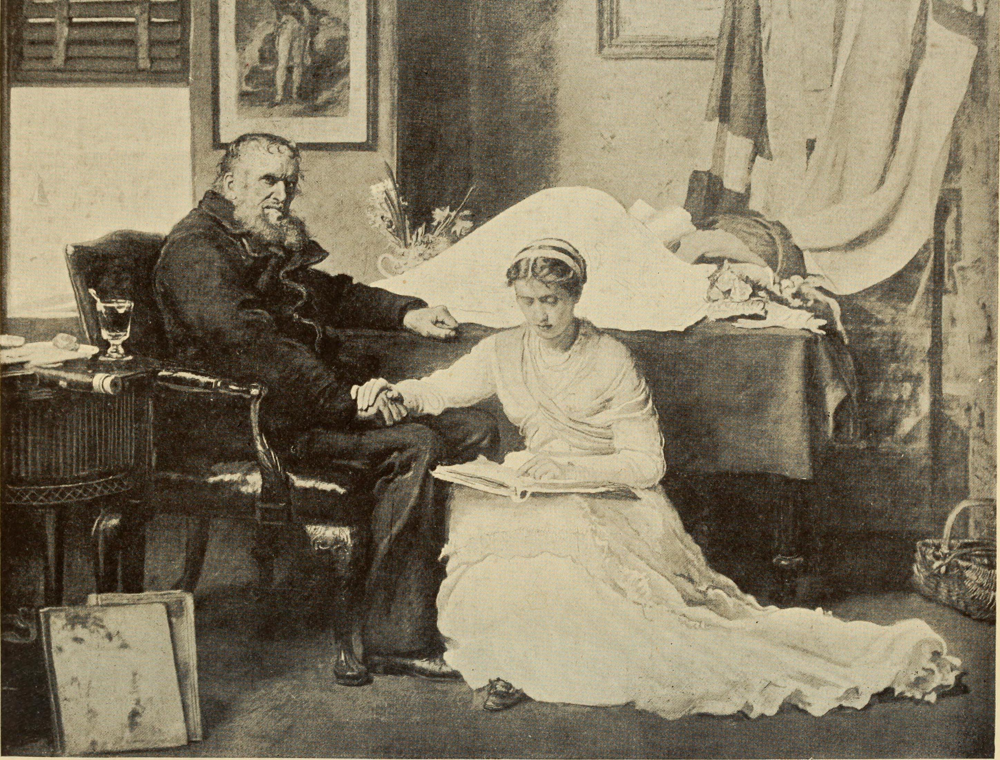

Welcome to the mini digital edition of Mary Shelley's Frankenstein. Made as a project for Text as Data II, taught at the University of Antwerp.
This mini edition contains the scans of the 7th chapter of the manuscript and their annotated transcriptions.
Responsible editor and annotator:Tereza Blahová
Mary Wollstonecraft Shelley and Percy Bysshe Shelley 
This digital library contains the following pages:
This digital edition was based on the manuscript that is available through the Shelley Godwin Archive. The Shelley Godwin Archive contains the digitized manuscripts of the works by Percy Bysshe Shelly, Mary Wollstonecraft Shelley, William Godwin and Mary Wollstonecraft. More manuscripts and works by other authors can also be found via the website of the Bodleian Library which is one of the institutions overseeing The Shelley-Godwin Archive.
Licence: Attribution-NonCommercial 4.0 International(CC BY-NC 4.0 DEED)
Terms and details available here.